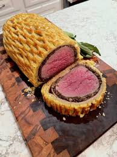

Beef Wellington

Bread and Beef
Beef Wellington is a classic dish made with a tender beef fillet coated in mushroom duxelles, wrapped in puff pastry, and baked to perfection. It is a luxurious and flavorful main course often served on special occasions.
Ingredients
- Beef fillet
- Mushrooms
- Prosciutto
- Puff pastry
- Egg yolk
- Olive oil
- Salt
- Black pepper
- Dijon mustard
Steps
- Preheat the oven to 400°F (200°C).
- Season the beef fillet with salt and black pepper.
- Heat olive oil in a skillet and sear the beef on all sides until browned. Let it cool.
- Finely chop the mushrooms and sauté them in the same skillet until the moisture evaporates. Let it cool.
- Spread a layer of prosciutto on plastic wrap, then spread the mushroom mixture on top.
- Place the seared beef on the mushroom layer and use the plastic wrap to roll it tightly. Chill in the refrigerator.
- Roll out the puff pastry and wrap it around the chilled beef roll, sealing the edges.
- Brush the pastry with egg yolk for a golden finish.
- Bake in the preheated oven for 30-40 minutes or until the pastry is golden brown and the beef is cooked to your desired doneness.
- Let it rest for 10 minutes before slicing and serving.
Home